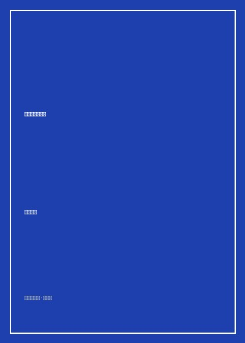

原谅我红尘颠倒

8.2
★★★★☆
豆瓣评分 · 16,800 人评价
未标记阅读状态
当代文坛最冷酷锋利的现实主义小说之一，慕容雪村无情刺穿诉讼掮客、法官勾兑与名利浮华背后的欲望炼狱。
总体观点
慕容雪村的《原谅我红尘颠倒》是当代中国社会批判文学中极具震撼力与争议性的一部黑暗长卷。作者延续了自《成都，今夜请将我遗忘》以来的冷峻笔调，以名牌红顶律师魏达沦为死刑犯后的狱中自白为主线，将锋芒直指二十世纪初沿海经济飞速发展伴生的司法寻租、权力勾兑与权钱交易灰产网络。
小说以解剖刀般的残忍，展现了魏达如何从一个怀抱法治理想的法学院高材生，一步步被名利场染黑，蜕变为在法官、涉黑商人和贪官之间穿针引线的腐败操盘手。全书没有廉价的道德粉饰，而是在声色犬马的狂欢崩塌之后，直面人性被贪婪反噬的惨烈下场。它如同一声警世钟鸣，叩问在物欲横流的时代中，良知究竟该如何自我安顿。
核心观点
-
1. 法治理想在寻租潜规则面前的被动异化
当诉讼胜负不再取决于法理与证据，而取决于与主审法官的私交与利益捆绑，律师职业便堕落为掮客行当。
魏达在法庭上敷衍念完辩护词，真正的胜负早已在昨夜高尔夫球场与私人会所给院长的巨额分肥饭局上盖棺定论。 -
2. 没有永远的盟友：欲望链条上的相互利用与残杀
依靠利益构建的关系网本质脆弱如薄冰，一旦风暴降临，同盟者会毫不犹豫地将彼此推入万劫不复的深渊。
涉黑商人与魏达称兄道弟十余年，在反腐调查收紧的生死关头，第一时间安排杀手灭口并向纪委检举魏达以求自保。 -
3. 声色犬马是对内心深处道德空虚的病态代偿
在物质极大丰裕后展现的挥金如土、荒淫无度，不过是灵魂感知到罪恶与虚无后企图麻痹神经的自杀式狂欢。
魏达夜夜流连顶级夜总会一掷千金，然而清晨宿醉醒来面对豪华海景房的空旷，内心只有排山倒海的恶心与彻骨绝望。 -
4. 恶的平庸与制度漏洞下的集体共谋
腐败不仅是个别坏人的作恶，更是整个生态系统中各方默许、利益均沾后形成的固化潜规则闭环。
从法院书记员、评估审计师到知名大律师，人人都知晓案件猫腻，却在按比例分成的默契中沦为流水线上的共谋零件。 -
5. 高墙之内的良知苏醒与不可逆的终极悔罪
唯有当所有虚幻的光环被剥夺殆尽、戴上冰冷脚镣等待死刑覆灭时，人才能重新看清平凡诚实生活的无价真意。
在死囚牢房窄小的天窗下，魏达抚摸着冰冷水泥墙，想起初入法学院时念诵的宪法誓词，流下了迟到一生的忏悔血泪。
树状思维导图
全书思维导图 · 知识脉络树
已复制思维导图大纲到剪贴板！
全书结构
-
第一章 看守所的黎明：脚镣下的自白
名牌大律师魏达身陷看守所死囚牢房，以倒叙形式开启对自己罪恶一生的冷酷清算。
细腻刻画看守所内刺骨的铁窗寒光与早操口号，将昔日呼风唤雨的大律师还原为卑微的死刑待决犯。 -
第二章 锦绣前程与掮客之路
回顾初入律所时的坎坷受挫，在初次见证同行通过潜规则巧取豪夺后，心理防线彻底崩溃决堤。
记录魏达如何用第一笔重金攻破法院副院长的防线，第一次品尝到不正当诉讼带来的暴利快感。 -
第三章 黄金盛宴与声色泥潭
商业帝国纠纷、破产清算重组中的巨额寻租，展现官商法三方狼狈为奸的红尘狂欢图景。
详述一家国有化工厂改制破产案中，魏达如何里应外合侵吞数千万元国有资产并致使数百老工人流离失所。 -
第四章 致命绞索与同盟反目
反腐风暴骤起，涉黑老板跑路、知己情妇反戈一击，魏达陷入四面楚歌的灭顶之灾。
还原魏达在机场VIP通道被公安经侦当场按倒上铐的惊悚瞬间，精心编织的通天关系网顷刻化为齑粉。 -
第五章 炼狱终局与红尘大梦
法槌落下死刑判决，在生命倒计时中直面人性的终极审判，向苍茫人世发出凄厉的求恕呼号。
结尾魏达在遗书中写下“原谅我红尘颠倒”，用生命的毁灭为贪婪的时代献上最为沉痛的黑色祭品。